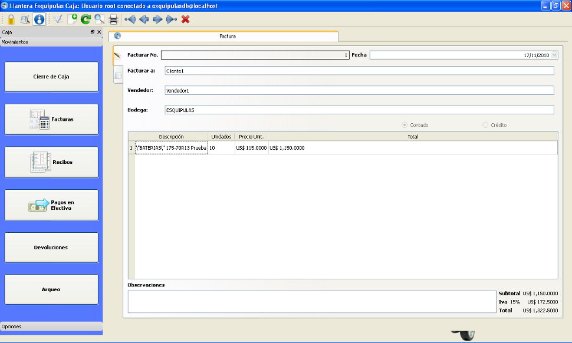
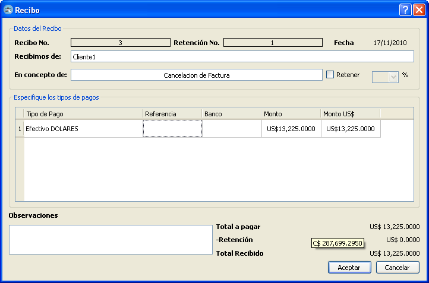

MIS Esquipulas Caja: Facturas
Este modulo registra las facturas de venta al credito o contado que se realizan diariamente, en este formulario se deben de especificar, el cliente, el vendedor, la bodega
para controlar la existencia de los articulos en cada bodega, la lista de articulos y el tipo de pago de dicho documento.
Si eligio una factura al credito esta debe ser autorizada por un usuario con los permisos necesarios, de lo contrario esta queda con estado pendiente y no puede ser impresa.
 Facturas
Para anular una factura debe dar click en el icono(
 ), unicamente se pueden anular facturas del dia actual,
al credito y sin abonos, sino debera elaborar un documento devolucion.
Al elegir una factura al contado, debe llenar inmediatamente el recibo que cancela esta factura y rellenar los datos correspondientes, el tipo de pago,
la retención de ser necesaria y las posibles observaciones.
), unicamente se pueden anular facturas del dia actual,
al credito y sin abonos, sino debera elaborar un documento devolucion.
Al elegir una factura al contado, debe llenar inmediatamente el recibo que cancela esta factura y rellenar los datos correspondientes, el tipo de pago,
la retención de ser necesaria y las posibles observaciones.
 Recibo de Contado